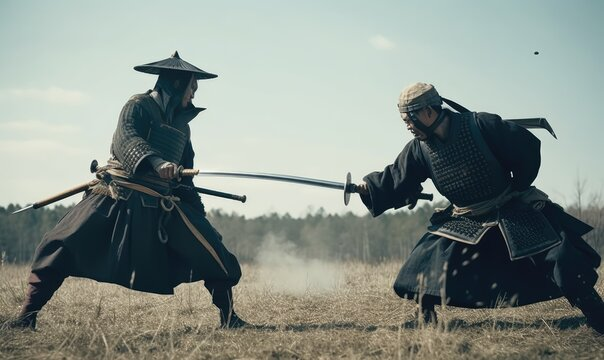

Qui étaient les Samouraïs?
Les samouraïs sont premièrement apparus durant l’ère Sengoku entre le 15e et 16e siècle. Ils étaient bien différents à cette époque , car c’était un moment de guerre civile dans le Japon et ces guerriers trahissaient souvent leur maître, changeaient de côté et se révoltaient, pas si honorifique que ça finalement. En effet, le samouraï que nous connaissons aujourd’hui, celui qui suivait la voie du Bushidō, a fait son apparition durant l’ère Edo, entre 1603 et 1868. C’est aussi durant cette période que le hara-kiri, le suicide rituel du samouraï, est apparu.
Un samouraï qui avait perdu son daimyo, que ce soit par la mort de ce dernier ou par la perte de ses faveurs, était perçu comme un rōnin, un vagabond. En temps normal, lorsqu’un samouraï perdait son maître il devait se faire seppuku, mais ceux qui refusaient apportaient la honte et le déshonneur sur leur famille.
Il y a eu, durant l’ère Edo, un événement historique qui a fait parler de lui en adaptations cinématographiques, les 47 rōnins, où un groupe de vagabonds ont essayé de venger la mort de leur daimyo, Asano Naganori, qui s’était fait ordonné par Kira Yoshinaka de se faire seppuku. Après un an d’attente, les rōnins tueront Kira et vengeront alors l’honneur de leur maître.
